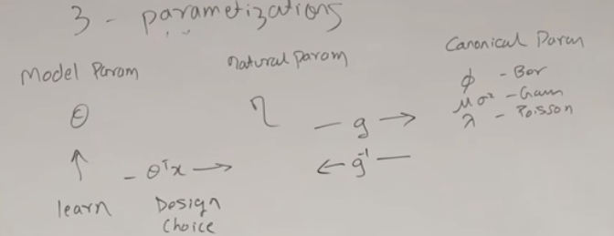
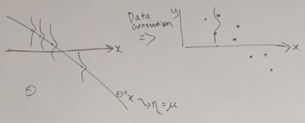
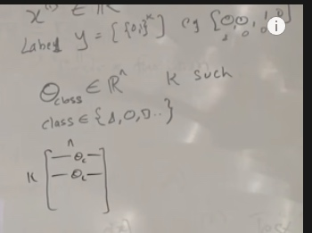
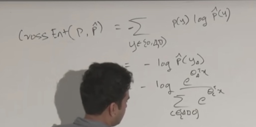

Perceptron
Not used in practice, we study it for historical reasons.
Logistic/Sigma Regression
\[g(x) = \frac 1 {1+e^{-x}}
\]
We will choose
\[h_\theta(x) = g(\theta^Tx) = \frac 1 {1+e^{-\theta^Tx}}
\]
g(z) tends to 1 as \(z \rightarrow \infty\)
0 or 1 depending on the \(\theta\)
\[\theta_{j}:=\theta_{j}+\alpha\left(y^{(i)}-h_{\theta}(x)^{(i )}\right) x_{j}^{(i)}.
\]
\(y^{(i)}-h_{\theta}(x)^{(i )}\) could be 0 if the algorithm got it already.
Could be +1 if wrong and \(y^{(i)} = 1\) and could be -1 if worng and \(y^{(i)} = 0\)

The algorithm learn an example at a time and then new example comes in, which is not in true position.

The \(\theta\) would be perpendicular to the line(separation boundary).
We can see the new x is misclassified.
So the \(\theta\) will adds \(\alpha x\) then becomes \(\alpha'\)
\(\theta \approx x| y =1\) theta will be similar to x when y = 1
\(\theta * x | y = 0\) theta will be not similar to x when y = 0
We want the decision boundary to seperate two classes of x.
Given x, we should make theta to move close to x.
We just add a component of x, and make theta rotate in that way. To make second one close to the first one.
The logistic regression is more like a soft way of perceptron.
Exponential Family
\[p(y ; \eta)=b(y) \exp \left(\eta^{T} T(y)-a(\eta)\right) = \frac {b(y)\exp(\eta^TT(y))}{e^{a(\eta)}}
\]
- y is the data.
- \(\eta\) is called the natural parameter(canonical parameter). Can be a vector, also can be a scalar.
- T(y) is suffcient statistic. For all of the distributions we are going to see today, T(y) will be equal to just y.
- b(y) is called Base measure.
- \(a(\eta)\) is called log-partition function.
\(\eta\) and T(y) need to match. For some T, a and b, the p will be the PDF of Gaussian.
To show a distribution is in exponential family, the most straightforward way to do it is to write out the PDF of the distribution in a form that you know. Then do some algebraic massaging to bring it to this form.
Examples
Bernoulli Distribution
Is used to find the binary data.
\(\phi\) = probability of event
We will take the PDF of Bernoulli into the form of exponential.
\(p(y;\phi) = \phi^y(1-\phi)^{(1-y)}\) (Just like programming writing if=else)
\[\begin{aligned}
&=\exp \left(\log \left(\phi^{y}(1-\phi)^{(1-y)}\right)\right) \\
&=\exp \left[\log \left(\frac{\phi}{1-\phi}\right) y+\log (1-\phi)\right]
\end{aligned}
\]
\[\begin{aligned}
&=\underbrace{1}_{b(y)} \exp [\underbrace{\log \frac\phi{(1-\phi)}}_{\eta} \underbrace{y}_{T(y)}+\underbrace{\log (1-\phi)}_{\alpha(\eta)}] \\
&b(y)=1\\
&T(y)=y\\
&\eta=\log \frac\phi{(1-\phi)} \Rightarrow \phi = \frac 1 {1+e^{-\eta}}(\text{just like the sigmoid function})\\
&a(\eta)=-\log (1-\phi) \Rightarrow-\log \left(1-\frac{1}{1+e^{-\eta}}\right) = log(1+e^\eta)
\end{aligned}
\]
Gaussian with fixed variance
Assume \(\sigma^2 = 1\)
\[\begin{aligned}
p(y ; \mu) &=\frac{1}{\sqrt{2 \pi}} \operatorname{exp}\left(-\frac{(y-\mu)^{2}}{2}\right) \\
&=\underbrace{\frac{1}{\sqrt{2 \pi}} e^{-\frac{y^{2}}{2}}}_{b(y)} \operatorname{exp}(\underbrace{\mu}_{\eta} \underbrace{y}_{T(y)}-\underbrace{\frac{1}{2} \mu^{2}}_{a(\eta)})\\
b(y) &=\frac{1}{\sqrt{2 \pi}} \operatorname{exp}\left(-\frac{y^{2}}{2}\right) \\
T(y) &=y \\
\eta &=\mu \\
a(\eta) &=\frac{\mu^{2}}{2}= \frac{\eta^{2}}{2}
\end{aligned}
\]
Property
If we perform maximum likelihood on expotential family,
- MLE with respect to(wrt) \(\eta\) is concave
Negative log likelihood(NLL) is convex
- \(E[y;\eta] = \frac {\partial a(\eta)} {\partial \eta}\)
- \(Var[y;\eta] = \frac {\partial^2 a(\eta)} {\partial \eta^2}\)
Members in Exponential Family
- Real number data like price of house in regression
- Binary when output is 0 and 1 in classification
- Count(Non-negtive integers) like number of visitors just like a count
- Positive real value integers(\(R^+\))
- Gamma, Exponential(this is the exponential distribution that is in exponential family.)
- Probability distributions over probability distributioins
- Beta, Dirchlet (Bayesian)
Generalized Linear Models(GLM)
GLM is like a natural extension of exponential families to include covariates or include your input features in some way. Since in exponential families, we are just dealing the y.
We can choose an appropriate family in the exponential family and plug it onto a linear model.
The assumptions/design choices that are gonna take us from exponential families to GLM.
- \(y|x;\theta\) ~ Exponential Family(\(\eta\)) (Depending on the the situation, we can choose diffenrent distribution.)
- \(\eta = \theta^Tx\) \(\theta \in \mathbb{R}^{n}, \quad x \in \mathbb{R}^{n}\)
- Test time: output \(E[y|x;\theta]\)
Given the x, we will get an exponential family distribution, and the mean of the distribution will be ths prediction that we make for a given x.
What we mean is \(h_\theta(x)=E[y|x;\theta]\)
The left is the model and the right is the distribution. We give the x to the linear model and we will get \(\eta\) by \(\theta^Tx\). The parameter of the distribution is the output of the linear model. We need to choose appropriate b, a and T according to the problem we choose.
\(E[y,\eta] = E[y,\theta^Tx] = h_\theta(x)\)
We are just training \(\theta\) to predict the parameters of exponential family distribution whose mean is the prediction we are going to make for y.
We do gradient descent on \(\theta\) in the model and get \(\eta\).
That is what we do on test. In learning, we do maximum likelihood. \(\max _{\theta} \log P\left(y^{(i)}, \theta^{T} x^{(i)}\right)\) We are doing gradient descent on the p by taking gradients on \(\theta\).
GLM Training
No matter what choice we make on parameters, the learning update rule is the same.
Learning Update Rule
\(\theta_j := \theta_j + \alpha(y^{(i)} - h_\theta(x^{(i)}))x^{(i)}\)
This is the algorithm we can straightly do learning without doing algebra on the gradients and the loss. We can go straight to the update rule and do our learning. We plug in \(h_\theta(x)\) depending on the choice of distribution we make and then we can start learning.
The Newton Method is probably the most common you would use with GLMs, as long as the number of features is less than a few thousand.
No matter what method we do, the update rule is the same. We just change the \(h_\theta\) and do the learning.
Terminalogy
- \(\eta\): natural parameter
- \(\mu:E[y;\eta] = g(\eta)\): Canonical Response Function \(g(\eta) = \frac {\partial a(\eta)} {\partial \eta}\)
- \(\eta = g^{-1}(\mu)\) Canonical Link Function
3 parametization(in 3 spaces)
- Model Param \(\theta\)
- Natural Param \(\eta\) for exponential family
- Canonical Param \(\phi\) for Bernoulli, \(\mu\sigma^2\) for Gaussian, \(\lambda\) for Poisson.
When we learning GLM, \(\theta\) is the only thing we learn.
Then we make design choice that using linear model \(\theta^Tx\) to get \(\eta\).
Then we use \(g = \frac {\partial a(\eta)} {\partial \eta}\) to from natural param to canonical param.

So we just can get the logistic regression in decent mode.
Assumption
Regression
For every given x(could be multi numbers), we have a separation line. And we can also see the Gaussian distribution whose variance is 1.

Our task is to find backwards to find the \(\theta\)
Classification
Softmax Regressioin(Multiclass Classification)(Cross Entropy Minimization)

One-hot vector: the vector filled with 0s except with a 1 in one of the places.
Now we have a set of parameters per class.
Given an example x, now we have classes.
Now it is not 0 or 1 but real numbers.
Then we take exponential, then make everything positive.
Then we normalize them. Then the sum of the heights will add up to 1.
Now the true y will look like another shape.
Now the goal of learning approach is going to do is to minimize the distance between two distributions.
We need to change the left to look like the right. Which is minimize the cross entropy between the two distributions
Cross Entropy

Then we treat it as loss and do gradient descent.